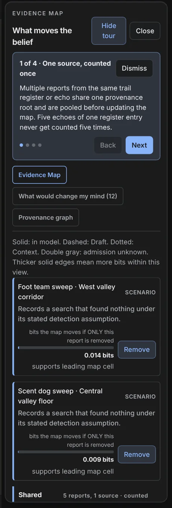

A hiker is overdue. One walker remembers passing her on the Mist Trail at about ten in the morning and writes it in the trail register. By evening the sighting has been repeated five times: a ranger copies it into the patrol log, a volunteer radios it in, someone posts it, a reporter quotes the post, and a second volunteer, hearing the radio, writes it into the register again in different words. The incident room now holds five documents that all say "Mist Trail, mid-morning".
How many witnesses is that?
One. Everyone in the room knows it is one, if they stop to trace it. But the documents arrive separately, from different people, in different words and at different times, and the human mind counts arrivals. So does any software that treats each document as independent evidence. Five likelihoods multiply, the map collapses onto the Mist Trail, and the search goes there with a confidence that was never earned.
ABYSSAL's demonstration case is built around exactly this scenario. It is called One witness, five echoes, and it is the fastest way I know to show what the product is for.
01What a copy is worth
Write \(x\) for the hiker's location and \(y_1\) for the original sighting. If the five later reports \(y_2, \dots, y_6\) are copies, they depend on \(x\) only through \(y_1\):
The second factor does not involve \(x\) at all, so it cancels when the map is normalised. Five copies carry exactly zero bits of information about where the hiker is. They carry information about how a story spread, which may be useful for other reasons, but not about the hiker.
If instead the six reports came from six people who each independently saw her, the likelihood would be \(\prod_k P(y_k \mid x)\), and the plausible width would shrink roughly as one over the square root of the number of witnesses, the way averaging independent measurements does. The difference between those two models is the difference between a 13 km² search area and a 2 km² one, and nothing in the text of the reports tells you which model is true. Only their provenance does.
02How ABYSSAL pools a source
Every observation in ABYSSAL hangs from a provenance root: the earliest document it can be traced to. Five trail-register echoes share one root, the original logbook entry. When several admitted observations share a root, their likelihood layers are pooled before they touch the map, by a geometric mean:
If the echoes are exact copies, \(L^{(m)} = L\) for all \(m\), and the pool returns \(L\): five copies count exactly once, as they should. If they differ, because a retelling drifted ("Mist Trail" became "near Vernal Fall"), the pool returns their log-average, a compromise that is broader than any one of them when they disagree. Pooled roots then multiply with other, genuinely independent roots in the usual way. Because roots are pooled before accumulation, the posterior is exactly invariant to the order in which evidence arrives.
Why a geometric mean and not an arithmetic one? Two reasons. The normalised geometric mean of a set of distributions is the distribution that minimises the average Kullback–Leibler divergence to them, \(\arg\min_q \tfrac1n\sum_m D_\text{KL}(q \,\|\, p_m)\), so it is the natural "consensus" in the same information geometry the rest of the engine uses. And logarithmic pooling is the one pooling rule that commutes with Bayesian updating: pool then update gives the same answer as update then pool. The arithmetic mean has neither property. It is, however, a modelling choice; the experimental v3 engine replaces it with an explicit shared-source density, and the engine audit lists all three treatments side by side so nobody mistakes one for another.
The likelihood of each report is the v2 contamination mixture \((1-r) + rK/\bar K\). Slide the number of reports up: the naive posterior keeps sharpening on the copies; the pooled one does not move. Add retelling drift and the pooled posterior widens slightly, because disagreeing copies are less informative than one clear original.
03The trap inside "which evidence mattered?"
Pooling fixes the map. It creates a second, subtler problem in the explanation of the map, and this one catches experts.
The obvious way to ask "how much did this report matter?" is to remove it and see how far the map moves. Do that for echo number three. The remaining four echoes still share the root; their geometric mean is the same layer as before; the map does not move. Echo three is worth 0.000 bits. So is echo one, two, four and five. A reviewer reading that table would conclude that the trail-register reports are irrelevant to the answer, and might switch them all off one at a time to tidy up the case, at which point the map lurches sideways.
Each echo is redundant given the others, so no single one matters, and yet together they carry the case. Statisticians call this masking; anybody who has computed feature importance on correlated inputs in machine learning has met it. Drop-one importance says every correlated feature is useless; the model collapses when you drop them all. It is the reason methods like Shapley values exist.

ABYSSAL's Evidence Map therefore shows both numbers. For every item it reports the per-item counterfactual, \(D_\text{KL}(p^\text{full} \,\|\, p^{-k})\). For every provenance root with more than one active child it also reports the whole-source counterfactual, \(D_\text{KL}(p^\text{full} \,\|\, p^{-\text{root}})\), computed by the same inference path with every observation from that root removed together. In the demo, each echo is worth almost nothing on its own and the source is worth a great deal. The bars are labelled as different counterfactuals, and the panel shows how far the sum of the parts is from the whole, so nobody adds them up.
Underneath both numbers sits the Provenance graph: sources on the left, claims and observations in the middle, the map on the right, with edge thickness proportional to bits. It is the picture you show a sceptic. You can see five lines converge on one register entry before they reach the map.

04The same mistake, everywhere
I started thinking about this problem in a search context, but it is not a search problem. It is the problem of fusing sources whose errors are correlated, and it is everywhere money or lives depend on fused judgement.
- Intelligence analysis calls it circular reporting: a single source's claim reaches an analyst through several channels and is mistaken for corroboration. Post-mortems of major assessment failures repeatedly find a small number of sources counted many times over. The analyst's question is ABYSSAL's question: what is the provenance root of each report?
- Open-source investigation faces it at internet scale: a video is reposted by a thousand accounts, each with its own caption, location tag and timestamp, and the geolocation work has to begin by collapsing them back to the first upload.
- Finance faces it in credit and in research. Several analysts upgrade a stock after one channel check; several "independent" risk signals are driven by one macro factor; a portfolio of loans looks diversified until a common shock arrives. Underestimated correlation between apparently independent sources of evidence or risk is, in a sense, the canonical way models fail in the tails.
- Medicine faces it in meta-analysis, where the same patients can appear in several published trials and be counted repeatedly.
- Machine learning faces it as duplicated data across training and test sets, and as masking in feature attribution, exactly as above.
In each field the technical fix is some version of what ABYSSAL does: make provenance explicit, pool within a source, multiply across sources, and report the influence of whole sources as well as individual items. The hard part is never the formula. It is the discipline of recording where every claim came from, at the moment it arrives, when nobody is yet wondering. That is why every file in ABYSSAL gets a SHA-256 receipt and a root at import time rather than at review time.
In the seventeenth century a navigator checks a coastline position in five almanacs and finds them in perfect agreement. Is that reassuring? It depends entirely on whether the five printers each surveyed the coast or all copied the same survey, errors included. Perfect agreement between sources should, if anything, raise the suspicion of copying: independent measurements disagree a little. ABYSSAL's Merchant Royal case lives in exactly this world, where 114 retained documents about one 1641 shipwreck turn out to rest on a handful of original accounts.
05"What would change my mind?"
The Evidence Map has a second tab whose name I like more than anything else in the interface: What would change my mind. It looks forward instead of back. It lists candidate next observations, a search of a particular area with a particular asset, a witness or spot-measurement check at a particular place, and ranks them by expected information gain: how many bits, on average over the outcomes the current map predicts, the observation would move the map. Twelve candidates in the demo, filterable by kind.
For a binary observation that detects with probability \(d_c\) if the target is in cell \(c\), and with the map holding mass \(m_c\) there, the expected gain is the mutual information between the target's location and the outcome,
which is the same quantity Plan Studio uses per pound spent (Part 5). The point of the tab is cultural as much as mathematical. The most useful thing to know about a conclusion is how cheaply it could be overturned. A map whose top area depends on one sighting from one person at two kilometres in failing light should be sending someone to re-interview that person, not more teams to the top area. Search Health's trap T5, the fragile clue, fires automatically on the backward-looking version of the same question: when removing a single admitted item would move the map by more than a threshold in total-variation distance.
06Why a person must admit every piece
All of this rests on a rule that the codebase treats as invariant number one: the map changes only through approved, enabled observations with nonzero reliability. Importing a file does not change it. A detector flagging a contact does not change it. An AI model reading a scanned archive and extracting "the ship sank ten leagues off Land's End" does not change it. Each of those produces a draft or a context item that a person reviews and either admits, edits, or discards. The admission is recorded, with who and when, in a hash-chained log.
People sometimes read this as caution about AI. It is more specific than that. Provenance and independence are exactly the judgements that automated extraction is worst at, because they depend on information that is not in the document: who told whom, which archive copied which, whether this sonar contact is the same object as last week's. A model can propose that two reports share a root, and often should. But the decision to count something once or five times moves the map by bits that can send a helicopter to the wrong valley, and somebody accountable has to own it.
There is a second reason, which matters more as AI systems get better rather than less. A search case is an argument that has to survive review: by the next shift, by an inquest, by an insurer, by a court. "The system decided" does not survive review. "These seven observations were admitted by these two people for these stated reasons, and here is what the map looks like without each of them" does. The audit trail is not a compliance feature bolted on; it is the product.
07How this looks in the app
- Open the landing page and click See the Evidence Map: one witness, five echoes.
- Open the Evidence Map from the right-hand rail (or press E). Take the four-step tour.
- Find the Shared · 5 reports, 1 source · counted once row. Compare its bar with the individual echo bars.
- Click Remove on one echo. Note the bits. Undo. Now switch off the whole source from the archive and watch the map move.
- Open Provenance graph and follow the five echoes back to the logbook entry.
Every one of those actions is exactly undoable: the test suite checks that the posterior hash after undo equals the hash before, bit for bit.
Next, in Part 5: once the map is honest, where should the next hour of searching go, what is that hour worth, and when should you stop?